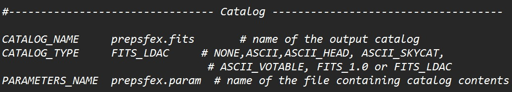
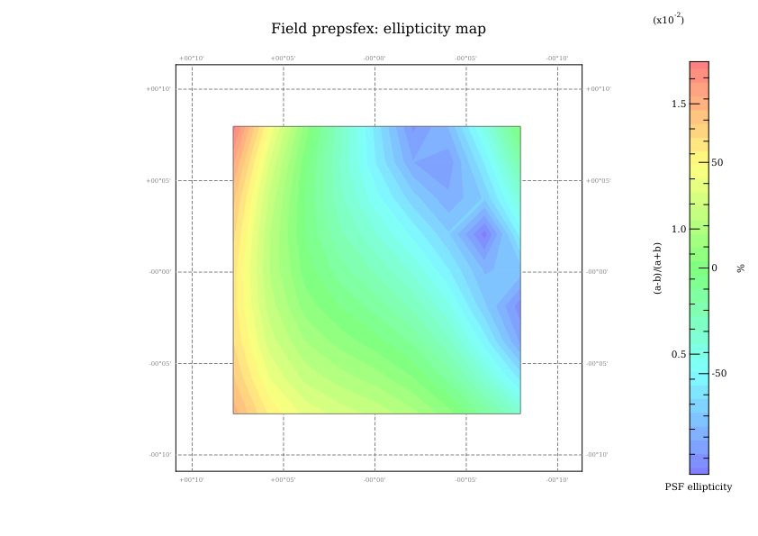

Parámetros iniciales.
Para empezar a trabajar con PSFEx vamos a crear una carpeta nueva para SExtractor con la misma configuración con la que hemos trabajado. Ahora, el archivo donde estarán los parámetros le daremos el nombre de prepsfex.param, al cual agregaremos los siguientes parámetros:
X_IMAGE
Y_IMAGE
FLUX_RADIUS
FLUX_APER(1)
FLUXERR_APER(1)
ELONGATION
FLAGS
SNR_WIN
VIGNET(35,35)
El parámetro VIGNET(35,35) es crucial, ya que le indica a SExtractor que extraiga una viñeta de 35x35 píxeles para cada objeto. Además, debemos asegurarnos que el archivo de configuración principal (con el nombre de prepsfex.sex) nos de el catálogo en formato binario:

Vamos a explicar que hace cada parámetro que vamos a darle a SExtractor
-
X_IMAGE
Guarda la coordenada X de la posición del objeto en la imagen original, en píxeles. -
Y_IMAGE
Guarda la coordenada Y del objeto. -
FLUX_RADIUS
Mide el radio (en píxeles) que contiene el 50% del flujo total del objeto. Es el "radio de medio flujo". -
FLUX_APER(1)
Mide el flujo dentro de una apertura circular fija (el primero definido porPHOTOM_APERTURES). -
FLUXERR_APER(1)
Guarda la incertidumbre (error) del flujo medido en esa misma apertura. -
ELONGATION
Mide la elongación del objeto, esta definida como: $$1-\frac{B}{A}$$ donde $A$ y $B$ son los ejes mayor y menor de la elipse que mejor se ajusta al objeto. -
FLAGS
Es un número entero que codifica diversas advertencias sobre la calidad de la detección. -
SNR_WIN
Es la relación señal/ruido (Signal-to-Noise Ratio) calculada usando la ventana Gaussiana (WIN), que es más robusta que la SNR basada en apertura simple. -
VIGNET(35,35)Esta es el parámetro más importante para PSFEx. Este le ordena a SExtractor que extraiga una "viñeta" de 35x35 píxeles centrada exactamente en cada objeto detectado.
Finalmente corremos SExtractor con el archivo de configuración que se editó.
$ sex IMAGEN.fits -c prepsfex.sexComo lo hemos estado haciendo hasta ahora, esto nos generará un archivo que en nuestro caso será prepsfex.fits. Con el catálogo ya creado, vamos a empezar a usar PSFEx, creamos un directorio nuevo y creamos el archivo de configuración:
$ psfex -dd > default.psfexEsto nos genera el archivo de configuración que debemos editar para empezar a usar PSFEx:

Parámetros clave a revisar
Selección de estrellas
SAMPLE_AUTOSELECT Y
SAMPLE_FWHMRANGE 2.0,10.0
SAMPLE_VARIABILITY 0.2
SAMPLE_MINSN 20
SAMPLE_MAXELLIP 0.3
Modelo del PSF
PSF_SAMPLING 0
PSF_SIZE 25,25
PSF_RECENTER Y
BASIS_TYPE PIXEL_AUTO
BASIS_NUMBER 20
Variabilidad espacial del PSF
PSFVAR_KEYS X_IMAGE,Y_IMAGE
PSFVAR_GROUPS 1,1
PSFVAR_DEGREES 2
Salidas de verificación
CHECKPLOT_TYPE FWHM,ELLIPTICITY
CHECKPLOT_NAME fwhm.png,ellipticity.png
CHECKIMAGE_TYPE CHI,PROTOTYPES,SAMPLES,RESIDUALS,SNAPSHOTS
CHECKIMAGE_NAME chi,proto,samp,resi,snapAntes de continuar, vamos a explicar un poco que son los parámetros que se mencionaron antes.
| Parámetro | Descripción |
|---|---|
SAMPLE_AUTOSELECT (Y/N) |
Le dice a PSFEx si debe seleccionar automáticamente qué fuentes del catálogo son estrellas válidas para construir el modela de PSF. |
SAMPLE_FWHMRANGE (mínimo,máximo) |
Determina el rango de FWHM (en píxeles) que se considera válido para una estrella. |
SAMPLE_VARIABILITY
|
Controla cuánta dispersión en FWHM se tolera alrededor del valor "moda" detectado automáticamente al hacer el histograma de FWHM. |
SAMPLE_MINSN
|
Relación señal/ruido mínima que debe tener una fuente para ser considerada como estrella de entrenamiento |
SAMPLE_MAXELLIP
|
Elipticidad máxima permitida, definida como $(a-b)/(a+b)$ y va de 0 a 1. Las estrellas deberían ser casi circulares. |
PSF_SAMPLING
|
Define el "pixel scale" del modelo de PSF relativo a la imagen original. 0 significa que PSFEx calcula automáticamente el muestreo óptimo siguiendo el criterio de Nyquist. |
PSF_SIZE (ancho,alto en píxeles)
|
Tamaño del recorte donde se construye el modelo del PSF. Debe ser lo suficientemente grande para capturar todo el flujo de la estrella. |
PSF_RECENTER (Y/N)
|
Cuando está en SI, PSFEx re-centra cada estrella de muestra antes de construir el modelo, corrigiendo pequeños errores de centroide de SExtractor |
BASIS_TYPE
|
Define la base matemática usada para representar la forma del PSF.
|
BASIS_NUMBER
|
Cantidad de elementos de la base usados para representar el PSF |
PSFVAR_KEYS
|
Las variables (columnas del catálogo) respecto a las cuales el PSF puede variar espacialmente. Lo más común es la posición en la imagen |
PSFVAR_GROUPS
|
Agrupa las claves PSFVAR_KEYS en "grupos" que comparten el mismo grado de variación polinomial
|
PSFVAR_DEGREES
|
Grado del polinomio usado para modelar cómo cambia el PSF a través del campo para cada grupo definido. Por ejemplo:
|
CHECKPLOT_TYPE, CHECKPLOT_NAME
|
Definen qué gráficas de diagnóstico genera PSFEx
|
CHECKIMAGE_TYPE, CHECKIMAGE_NAME |
Definen qué imagenes FITS de diagnóstico se generan:
|
PSF_SIZE debe conicidir con el tamaño de la viñeta que extrajimos, es decir, debe ser de 35,35.
BASIS_TYPE lo dejaremos con PIXEL_AUTO que es el método más común para modelar la PSF.
PSFVAR_KEYS tendra X_IMAGE,Y_IMAGE.
PSFVAR_DEGREES tendra el valor de 2 como orden polinomial.
SAMPLE_MINSN tendra el valor de 20 como SNR mínima que debe tener una estrella para ser usada en el modelo.
SAMPLE_MAXELLIP será la elipticidad máxima permitida, con un valor de 0.3 (valor típico).
Ahora que hemos configurado nuestro archivo, vamos a correr PSFEx y antes de usarlo con SExtractor vamos a analizar los resultados obtenidos. Para ello hacemos el siguiente comando:
$ psfex prepsfex.fits -c default.psfex
Esto nos genera los diferentes archivos que se definieron para CHECKIMAGE_TYPE: Chi,Prototypes, Samples, Residuals y Snapshots, además, un archivo XML, este último se puede visualizar con ayuda del software TopCat. Sin embargo, para este caso se hizo un código en python para ver estos datos en un histograma, como se muestra a continuación:
Resultados: imagenes de chequeo y datos del archivo XML

Vamos a interpretar los resultados mostrados:
FWHM (píxeles y arcosegundos):
El valor del FWHM esta entre 3.85 y 4.16, con una media de 3.95, equivalente a $\approx 1.01-1.09\ \text{arcsec}$ con una media de 1.04. El rango entre mínimo y máximo es pequeño (8%) lo que nos indicaría que el seeing/PSF es bastante homogéneo entre las estrellas usadas.
Elipticidad:
Tenemos un mínimo de 0, media de 0.002 y un máximo de 0.017, recordemos que una elipticidad de 0 significa que la PSF es perfectamente circular, tenemos una media de 0.002 y un máximo de apenas 0.017 que indica que las estrellas son muy circulares y consistentes.
Parámetro beta de Moffat:
Tenemos un mínimo de 3.25, una media de 4.23 y un máximo de 4.96, este parámetro describe qué tan "pesadas" son las alas del perfil PSF. Valores de $\beta$ entre 3 y 5 son típicos y físicamente razonables para PSFs.
Residuos del ajuste PSF:
Aquí tenemos un mínimo de 0.020, una media de 0.022 y un máximo de 0.033. Esta es la métrica más importante para juzgar la calidad del ajuste, si se tienen valores bajos y con poca dispersión indican que el modelo ajusta consistentemente bien a casi todas las estrellas.
Número de estrellas:
Tenemos que PSFEx cargó 403 fuentes candidatas del catálogo, pero solo aceptó 342 (un 85%) para construir el modelo final, descartando 60 (un 15%) por no cumplir los criterios de selección.
Con estos resultados obtenidos parece que el modelo de PSF obtenido es bueno para comenzar a usarlo con SExtractor, pero también tenemos las imagenes de chequeo que pedimos a PSFEx (CHI,PROTOTYPES,SAMPLES,RESIDUALS,SNAPSHOTS).

SNAPSHOTS, muestra una colección de que PSFEx seleccionó para construir el modelo de la PSF.
En la figura anterior podemos observar distintos recuadros con estrellas, cada uno corresponde a una estrella extraída del catálogo generado por SExtractor. Podemos observar que las estrellas estan bien centradas y tienen una forma similar entre sí.

En la figura anterior podemos observar la imagen de chequeo PROTOTYPES, como ya se explico antes, PSFEx no guarda un solo PSF fijo, sino una base de 6 imágenes que, combinadas con un polinomio de grado 2 en X_IMAGE, Y_IMAGE permiten reconstruir el PSF en cualquier posición del campo de la imagen. Estos prototipos permiten describir cómo cambia la PSF a lo largo de la imagen.
Para complementar, podemos verificar la distribución de estrellas que se usaron para el modelo de la PSF, para ello debemos activar el catálogo de salida de PSFEx, esto se hace modificando los siguientes parámetros en el archivo de configuración de PSFEx:
OUTCAT_TYPE FITS_LDAC
OUTCAT_NAME psfex_accepted.cat
Esto nos genera el catálogo con columans como X_IMAGE, Y_IMAGE, DELTAX_IMAGE, DELTAY_IMAGE, FLAGS_PSF, etc. Así, generamos un archivo de regiones con ayuda de python para visualizar las estrellas aceptadas y las estrellas rechazadas.

En la figura anterior podemos observar que PSFEx tomo una distribución espacial aleatoria en el campo de la imagen, es decir, no tomo estrellas concentradas en una sola región. Esto es muy importante, ya que la PSF no es igual para estrellas que estan en una esquina de la imagen a las que estan en el centro de la misma.


En los gráficos anteriores podemos observar la distribución de FWHM y la elipticidad, el mapa de FWHM nos permite visualizar como cambia el ancho de la PSF a lo largo de la imagen, las áreas que tienen colores consistentes indican que el ancho de la PSF es estable en esa región, mientras que las áreas con cambios de color indican que hay cambios en el tamaño de la PSF. El mapa de elipticidad nos permite ver como cambia la forma de la PSF a lo largo de la imagen,